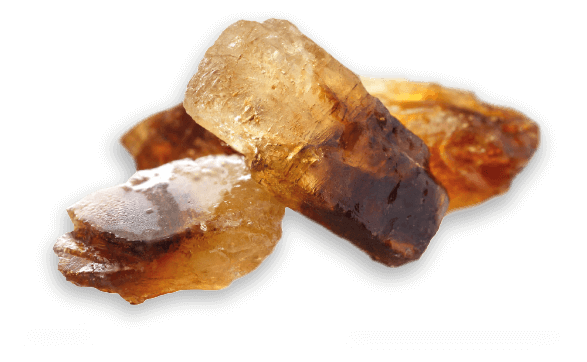
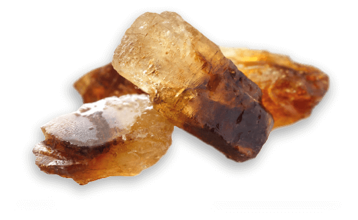
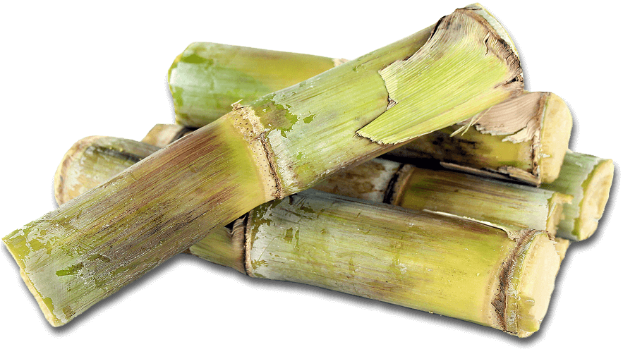

Kandij Cassonade
Met de toegevoegde smaak van een eeuwenoud avontuur
19e eeuw
Tot de 19e eeuw bestond er nog geen suikerproductie in Europa. Er werd enkel suiker gewonnen uit het suikerriet. De zoete rietstengels groeiden uitsluitend in verre tropische landen zodat suiker synoniem werd voor invoer per schip. De haven van Antwerpen zou hierbij snel een vooraanstaande rol innemen.
Een veelvoorkomend probleem vroeger, was dat de reis per schip vaak te lang duurde, waardoor de rietstengels tot gisting kwamen en dus onbruikbaar werden. Kruip nu in de huid van een 19e eeuwse kapitein met als taak de rietsuiker zo snel mogelijk in de Haven van Antwerpen te krijgen. Zoals je zult merken is een schip bevaren alles behalve simpel. Hou rekening met de windrichting en -snelheid en vergeet hierbij ook de zeilen niet!
Een eeuwenoud proces
Kandijkristallen worden verkregen door in een oververzadigde warme suikeroplossing zeer langzaam grote kristallen te laten groeien op katoenen draden of houten stokjes. Dit duurt enkele weken. Na de kristallisatie van de kandijsuiker, wordt de resterende siroop gescheiden en verwerkt tot o.a. de befaamde kandijcassonade.
De kandijcassonade ontstaat door het ‘zwieren’ van de resterende siroop na de kristallisatie, waaruit zowel de kandijcassonade als de kandijsiroop voort komen. Door het ‘zwieren’ vindt er een snelle kristallisatie plaats van nog bepaalde deeltjes. Deze gekristalliseerde deeltjes vormen onze befaamde kandijcassonade.
Biet vs riet
De dag van vandaag staat Antwerpen bekend om zijn talrijke suikerbietvelden. Toch wordt kandijcassonade nog steeds deels van rietsuiker gemaakt. De hoeveelheden hiervan variëren navenant wat beschikbaar is. De receptuur is dus nooit hetzelfde, wat het maken van kandijsuiker (en aanverwanten) net zo moeilijk maakt.
Probeer nu onze smaken
Proef het eeuwenoude avontuur van Candico in de verschillende smaken kandijcassonade. Bezoek www.candico.be voor onze andere producten.